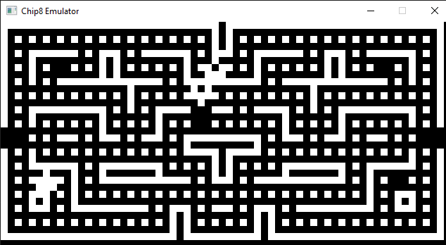

Projects
The polished, and the fun.
GitHub
A compiler for my own language I invented, called max--. It is written end to end, including a lexer, parser, IR generator, register allocator, code generator, and more.
It supports basic arithmetic, variables, functions, and control flow. The frontend is written in C, and the backend is written in C++.
Check out my Github for more info!
// Example max-- code
fn add(int x, int y): int {
return x + y;
}
fn main(): int {
int x = 1;
int y = 2;
int i = 0;
while (i < 5) {
if (i - x == 0 or i - y == 0) {
print(add(x, y)); // 3
}
else {
print(2 * (add(x, y))); // 6
}
i = i + 1;
}
return 0;
} // Prints: 6 3 3 6 6
A research project to investigate the efficiency and potential use of grammar-based compression of a time series.
Traditional compression is effective, but lacked the context of the time series data. By using Sequitur, we create a grammar that uses that context to compress the data more efficiently.
GitHub
A simple graphics renderer. It's mostly a canvas, and I made some fun art with it using shaders. One day will support 3D rendering.

A website to help users create interactive scene based video games.
Includes an online video editor, a scene editor, and a project manager.
 GitHub
GitHub
Turns your EEG data into the video you're watching.
We used the Muse 2 EEG headset to record the data, and then used a series of models to end up generating the same video you're watching.
GitHub
An android app to track your home's or businesse's inventory. You can store your item, an image, its price, and more.
You can also scan the barcode of the item to add it to your inventory.
GitHub
Uses a gyroscope(??) to track your movements during a workout, record it, and track repetitions, range of motion, and more.
Includes a web app to view and store the data.
GitHub
An emulator for a virtual architecture used in the 1970s. Meant to help understand how CPUs work, and more about emulation in general.

GitHub
An idle game where you choose one of seven classes, and roll every hour for a resource.
The resources also were meant to be part of a free market where you could trade them with other players.
This was my first serious project! It was a lot of fun.